Laufrad
12–14 Zoll- Alter
- 2–4 Jahre
- Schrittlänge
- ca. 30–40 cm
Ohne Pedale, mit leichtem Rahmen – so lernt dein Kind spielerisch das Gleichgewicht.
CHF 8.90/MonatAnsehen
Lobes Bikes · Showroom & Werkstatt in Solothurn
Kindervelos im Abo, die mit deinem Kind mitwachsen – und E-Bikes für den Arbeitsweg, den Einkauf und den Familienausflug. Beraten, eingestellt und gewartet in unserer eigenen Werkstatt.
Miete · Kindervelo-Abo
Dein Kind wächst schneller, als du «Stützräder» sagen kannst. Mit dem Lobes-Abo fährt es immer die passende Grösse: Wird das Velo zu klein, tauschst du es einfach gegen das nächste – im Laden in Solothurn kostenlos.
Zu klein geworden? Im Laden tauschen – das Abo läuft einfach weiter.
Unsere Velos
Alter und Schrittlänge sind Richtwerte. Am besten kommst du mit deinem Kind im Showroom vorbei – wir stellen Sattel und Lenker passend ein.
Ohne Pedale, mit leichtem Rahmen – so lernt dein Kind spielerisch das Gleichgewicht.
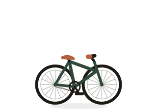
Das erste Velo mit Pedalen: tiefer Einstieg, kurze Kurbeln und leicht zu bremsen.
Für die ersten längeren Ausflüge – stabil, leicht und mit sicherer Geometrie.
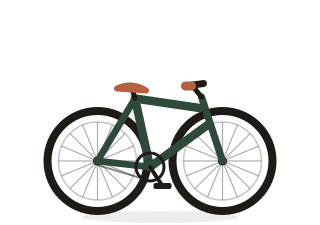
Bereit für den Schulweg: mit Gängen für Steigungen und Licht für dunkle Morgen.
Für grössere Touren mit der Familie und den täglichen Weg ins Schulhaus.
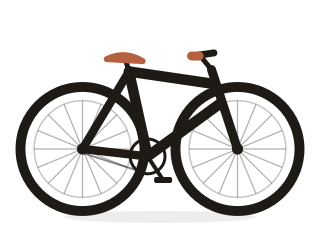
Das letzte Kindervelo vor dem ersten Erwachsenenrahmen – sportlich und robust.
So geht's
Finde mit Alter und Schrittlänge die passende Grösse – oder lass dich im Showroom in Solothurn beraten.
Wir stellen das Velo in unserer Werkstatt bereit und passen es bei der Abholung auf dein Kind an.
Ist das Velo zu klein, bringst du es vorbei und nimmst die nächste Grösse mit. Im Laden ist der Wechsel gratis.
Preise
Alle Preise pro Monat in CHF inkl. MWST. Mindestlaufzeit 12 Monate, ein Grössenwechsel verlängert sie nicht.
E-Bikes
Vier Modelle für Arbeitsweg, Einkauf und Familie. Alle mit kräftigem Mittelmotor, herausnehmbarem 720-Wh-Akku und hydraulischen 4-Kolben-Bremsen in Schweizer Ausführung. Probefahrt im Showroom in Solothurn.
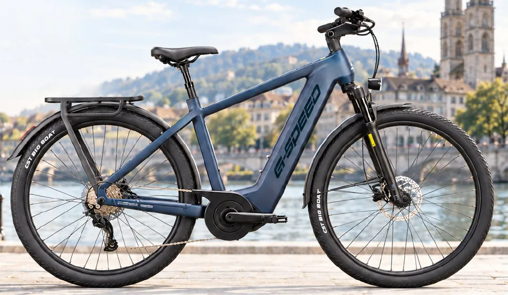
Sportlich, effizient.
Das City- und Pendel-E-Bike mit hohem Rahmen für alle, die zügig und direkt unterwegs sein wollen.
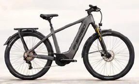
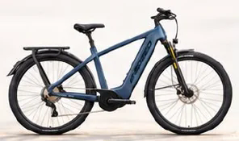
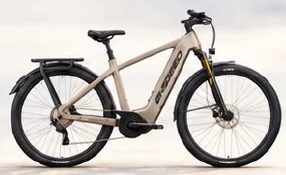
Komfort trifft Vielseitigkeit.
Mittelhoher Einstieg und verstellbares Komfort-Cockpit – für entspannte Fahrten in der Stadt und über Land.
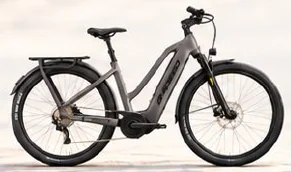
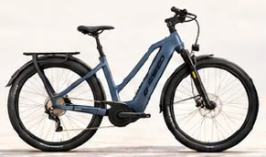
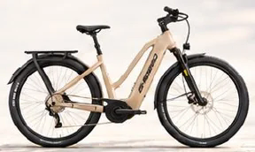
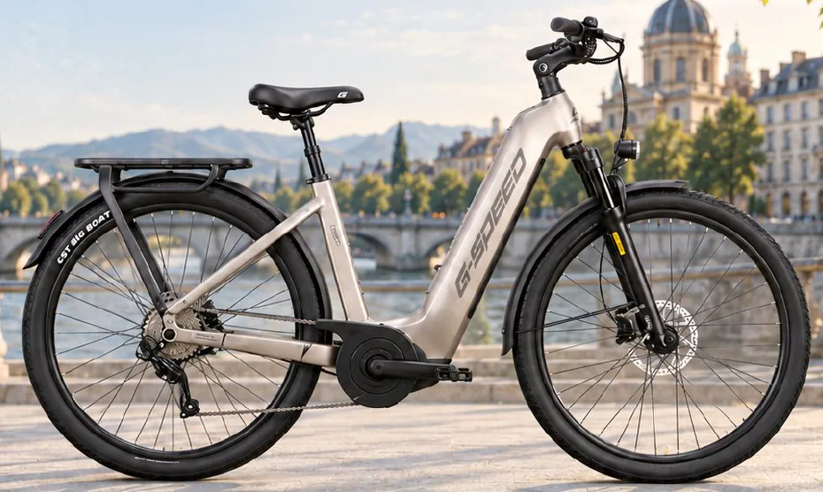
Bequemer Einstieg.
Tiefer Einstieg und integrierter Gepäckträger – leicht auf- und abzusteigen, auch mit vollen Taschen.
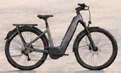
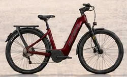
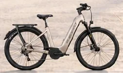
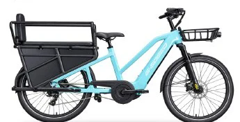
Platz für Kinder, Einkauf und Ausflug.
Das Familien-Cargo-Bike mit grossen 26-Zoll-Rädern vorne und hinten, Frontkorb und starkem Heckträger – für Fahrerinnen und Fahrer von 160 bis 200 cm.
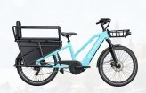
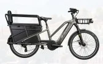
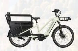
Schweizer Ausführung · Hersteller: G-Speed
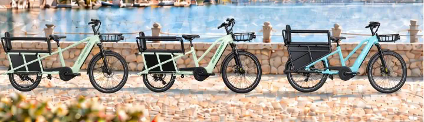
Reichweite je nach Fahrweise, Gelände, Unterstützungsstufe und Temperatur. Eine Version mit Bosch-Antrieb prüfen wir derzeit.
«Hier steht später die Stimme einer Familie, die mit Lobes unterwegs ist.»
Über uns
Hinter Lobes stehen Lorenzo, Bernd und Shiva. Aus den Anfangsbuchstaben unserer Namen ist LoBeS entstanden – und aus der Freude am Velofahren die Idee, Familien rundum mobil zu machen: Kinder fahren im Abo immer die passende Grösse, die Grossen steigen aufs E-Bike – für den Arbeitsweg, den Einkauf oder den Ausflug mit dem Cargo-Bike.
In unserem Showroom in Solothurn kannst du alle Kindervelo-Grössen anschauen, Probe sitzen und die E-Bikes Probe fahren. Gleich daneben ist unsere Werkstatt: Dort machen wir jedes Velo bereit, bevor es zu euch kommt, und kümmern uns um Service und Unterhalt.
Du bringst das Velo in unseren Laden in Solothurn und nimmst die nächste Grösse mit. Der Wechsel im Laden ist gratis, ab dann gilt einfach der Monatspreis der neuen Grösse.
Die Mindestlaufzeit beträgt 12 Monate. Ein Grössenwechsel startet sie nicht neu. Danach kannst du monatlich kündigen und bringst das Velo in den Laden zurück.
Für CHF 2.90 im Monat übernehmen wir Reparaturen nach Schäden in unserer Werkstatt. Die genauen Bedingungen findest du vor dem Abschluss in den Abo-Bedingungen.
Normale Gebrauchsspuren gehören zum Velofahren dazu und kosten nichts. Grössere Schäden reparieren wir in unserer Werkstatt und verrechnen sie nach Aufwand.
Am einfachsten holst du das Velo in unserem Showroom in Solothurn ab – dann können wir es direkt auf dein Kind einstellen. Ob und zu welchen Bedingungen wir auch liefern, sagen wir dir gerne auf Anfrage.
Die Preise nennen wir dir gerne auf Anfrage – schreib uns oder komm im Showroom vorbei.
Ja. Im Showroom in Solothurn kannst du die Modelle anschauen und Probe fahren. Am besten meldest du dich vorher kurz per E-Mail.
Mit dem 720-Wh-Akku bis zu 100 km. Wie weit genau, hängt von Fahrweise, Gelände, Unterstützungsstufe und Temperatur ab. Der Akku lässt sich herausnehmen und bequem zu Hause laden.
Unsere E-Bikes kommen mit hydraulischen 4-Kolben-Scheibenbremsen und 180-mm-Scheiben – für mehr Bremsreserven auf langen Abfahrten.
Wir, in unserer Werkstatt in Solothurn – für Kindervelos aus dem Abo genauso wie für E-Bikes.
Kontakt
Wir beraten dich gerne – im Showroom in Solothurn oder per E-Mail.